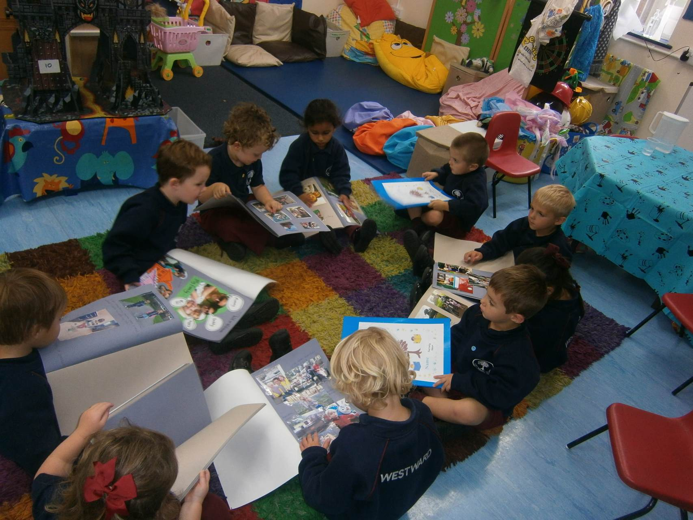

Learning Journey books
My Learning Journey

Information for Parents and Carers
We want children to feel safe, stimulated and happy at Westward and to feel secure and comfortable with staff. We also want parents to have confidence in both their children's well being and their role as active partners with Westward.
We aim to make Westward a welcoming place where children settle quickly and easily because consideration has been given to the individual needs and circumstances of children and their families.
Your child's Learning Journey celebrates his or her experiences. Over time it will tell a story about your child - his or her learning, friends, and the experiences he or she enjoys sharing with others.
Staff watch and notice each child at play because it helps us to understand and support their individual wellbeing and development. We really get to know the children as unique people with special skills, interests and ideas. The more we understand about your special child, the better we can support them in the way that is right for them.
Your child's teacher, TA and family work together to build this Learning Journey as a record of your child's Early Years. We value parents and carers taking the Learning Journey home and sharing in their child's learning. Although Learning Journeys will be sent home at the end of the year, you may wish to borrow them to share with other settings or important people - just as a member of the team! Throughout the year there will be opportunities when you will be invited to look through, and contribute to your child's Learning Journey, but we encourage you to contribute and look through on a more informal, regular basis. We also encourage you talk with your child about their Learning Journey and fell free to add in family photographs or other things of significance for your child.
At this age, so much happens so quickly and we would love to hear about events, activities or achievements which can be put into your child's Learning Journey! Feel free to write us a note, have a chat to a member of the team or bring in a photo, drawing or souvenir to share with us. When you tell us about your child a clearer picture unfolds and together we can plan more effectively to help your child's learning and development. When children are ready, they can also choose things that are important to them in their Learning Journey - though it is mainly kept at school it belongs to you and your child.
The Learning Journey will include the following:
Photographs
These capture moments and sequences of your child's experiences, their interests and explorations. You can add some of your own from home. Sometimes ,we will write down exactly what your child says about the photograph, so we know your child's point of view. This is also an accurate record of language develpment. Pictures of important people and things from home will help your child to feel secure when making the link between home and their school.
Observations
These are quick notes of significant moments we notice in your child's learning. Detailed observations give snapshots of the learning that your child has initiated themselves. We then think about what and how your child is learning their development and how best to support them further.
Your Childs Creations
These could be photo's of models, painting or their role play explaining what your child did or said.